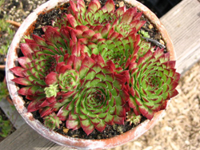
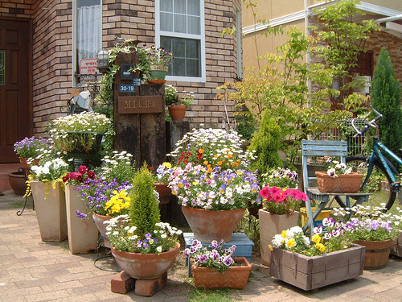

|
Предмети декорації для саду
Чудовим декоративним елементом оформлення саду є різноманітні ємкості (контейнери), в котрі висаджують рослини. Вони не тільки самі по собі являються прикрасою, а й підкреслюють красу різноманітних рослин, що в них ростуть.
Ємкість з квітучими рослинами можна помістити у будь-якому куточку ділянки: біля доріжки, при вході у сад, в центрі клумби, посередині газону чи, навіть, на терасі.

Для прикрашення саду використовують гарно підібрані валуни (каміння),
різноманітні дерев'яні декоративні елементи, колеса від фіри і, навіть, саму фіру (що особливо підкреслює вибір уркаїнського стилю).
Не обмежуйте свою фантазію: самі неочікувані, здавалось би відживши свій час предмети можуть надати саду своєрідну гармонію та підкреслити індивідуальність його власника.

Колони і постаменти як би припіднімають невеликі об'єкти над загальним планом і тим самим вводять їх в оформлюючий ансамбль.
Скляні кулі на дерев'яних ніжках-підставках додають гру світла і колірних сонячних ефектів в саду.
Фігурка казкового гномика, що причаївся під розмаєм осінніх плодів кизильника в тіні його гіок, надасть вашій ділянці фольклорну чарівність і додасть радість дітям.
Шпаківня для пташок у формі класичної чаші з фігурками птахів в центрі не тільки прикрасить ділянку, створив на ній романтичний куточок на фоні зелені декоративних кущів, що розрослися, але й залучить в сад пернатих друзів.
Зручне дерев'яне крісло та парасолька від сонця створять чудове місце відпочинку в гущі зелені або поблизу чарівного струмка, що зачаровуючи звуками води занурює Вас у стан душевного спокою.
Дуже гарні на фоні темної зелені і строкатих квітів білі лавочки. Вони створюють відчуття свіжості і вносять гармонію в різноманіття фарб. Необхідно пам'ятати, що лавочки призначені для відпочинку, тому вони повинні бути зруними і розташовуватися в живописному місці ділянки.
|